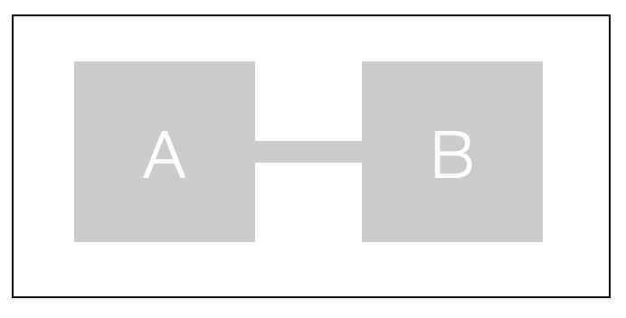

This page was generated from notebooks/L3/2_Chemical_Potential.ipynb.

Chemical Potential¶
So far, we have considered either isolated systems, meaning that no energy nor particle exchange is possible, and closed systems, which allow an exchange of energy with a reservoir (bath). We will now have a look at a system that also allows an exchange of particles with a reservoir. For these systems, we will define the chemical potential \(\mu\) which we will identify as the free energy change when adding one molecule of a given species to a thermodynamic system at constant \(p\) and \(T\).
We consider a system of two components A and B in contact with a heat bath and a diffusive equilibrium between A and B.
The total free energy of our system is then defined as
\begin{equation} G=G_{\mathrm A}+G_{\mathrm B}. \end{equation}
The total number of particles in the system is also conserved and given by \(N_{\rm tot}=N_{\mathrm A}+N_{\mathrm B}\). In equilibrium we require the free energy of the system to be a minimum with respect to the particle number such that:
\begin{equation} {\mathrm d}G=\frac{ \partial G_{\mathrm A}}{\partial N_{\mathrm A}}\bigg|_{T,p}{\mathrm d}N_{\mathrm A}+\frac{\partial G_{\mathrm B}}{\partial N_{\mathrm B}}\bigg|_{T,p}{\mathrm d}N_{\mathrm B}=\frac{ \partial G_{\mathrm A}}{\partial N_{\mathrm A}}\bigg|_{T,p}{\mathrm d}N_{\mathrm A}-\frac{\partial G_{\mathrm B}}{\partial N_{\mathrm B}}\bigg|_{T,p}{\mathrm d}N_{\mathrm A}=0. \end{equation}
with \({\mathrm d}N_{\mathrm A}=-{\mathrm d}N_{\mathrm B}\), since the total number of particles is conserved (i.e., \(\mathrm{d}N_{\rm tot}=0\)):
\begin{equation} \frac{\mathrm dG_{\mathrm A}}{\mathrm dN_{\mathrm A}}=\frac{\mathrm dG_{\mathrm B}}{\mathrm dN_{\mathrm B}}. \end{equation}
Apparently, in equilibrium the change in the free energy of system \(A\) needs to be the same of system \(B\) when exchanging particles at constant \(T,p\).
Chemical Potential
We can define a quantity
\begin{equation} \mu(T,p,N)=\frac{\mathrm dG}{\mathrm dN}\bigg|_{T,P} \end{equation}
which is termed the chemical potential, which is the change in the free energy when adding a particle to the system. The chemical potential may be interpreted as the cost for adding one more particle (at constant \(T,p\)) to the system.
Note
if \(\mu_l<\mu_v\) at constant \(T,p\), we can lower the free energy by moving a particle from \(v\) to \(l\),
\(\mu_l\neq \mu_v\) means non-equilibrium and partricles will diffuse until \(\mu_l=\mu_v\).
We will have a closer look at the chemical potential with an example below. The previous condition states that the chemical potential of the two systems is the same in equilibrium. The chemical potential is useful in many situations. For example, to determine
Phase equilibria¶

In this case, we have a boundary between two phases (e.g., liquid and vapor) and particles of the vapour phase may join the liquid phase and vice versa. In this case, the number of vapor particles \(N_{\rm vapor}\) and the number of liquid particles \(N_{\rm liquid}\) is not fixed, but the total number of particles \(N=N_{\rm vapor}+N_{\rm liquid}\) is.
Chemical equilibria¶

In the case of chemical equilibria, two species \(A\) and \(B\) may react to form a new species \(AB\) by a chemical reaction:
\begin{equation} A+B \rightleftharpoons A B. \end{equation}
Here the individual numbers of particles \(N_A\),\(N_B\) and \(N_{AB}\) are not fixed, but \(N_A + N_{AB}\) and \(N_B+N_{AB}\) are.
Example: Free energy of a dilute solution
We would like to calculate the free energy and the chemical potential for a dilute solution of some solutes in a solvent, which we just term H\(_2\)O. Actually, no additional information on the details of the solute and solvent are currently required, though if we want to have numbers, we would need to know which solute or solvent we are looking at.

Suppose we have
\(N_{\rm H_2 O}\) solvent molecules (e.g., water),
\(N_{\rm s}\) solute molecules (e.g., proteins).
The solute chemical potential is defined by
\begin{equation} \mu_{\rm s}=\left( \frac{\partial G_{\rm tot}}{\partial N_{\rm s}}\right)\bigg|_{p,T} \end{equation}
or intuitively as
\begin{equation} \mu_{\rm s}=G_{\rm tot}(N_{\rm s}+1)-G_{\rm tot}(N_{\rm s}). \end{equation}
The total free energy \(G_{\rm tot}\) consists of the enthalpy of forming the solvent molecules \(N_{\rm{H_{2}O}}\varepsilon_{\rm H_{2}O}\) and the enthalpy solvating the solute proteins \(N_{\rm s}\varepsilon_{\rm s}\).
\begin{equation} G_{\rm tot}=N_{\rm{H_{2}O}}\varepsilon_{\rm H_{2}O}+N_{\rm s}\varepsilon_{\rm s}-TS_{\rm mix}. \end{equation}
The mixing entropy can be calculated by either the Gibbs definition
\begin{equation} S_{\rm mix}=-k_{\rm B}\sum_{i}p_{i}\ln(p_{i}) \end{equation}
or the Boltzmann definition
\begin{equation} S_{\rm mix}=k_{\rm B}\ln(W). \end{equation}
We will use the latter definition including the number of possible configurations to obtain the mixing entropy. If the total number of molecules in the volume is \(N=N_{\rm H_2O}+N_{\rm s}\), we can write down the number of different ways to arrange the molecules as previously done. We obtain:
\begin{equation} W(N_{\rm H_2O}, N_{\rm s} )=\frac{N!}{N_{\rm H_2O}! N_{\rm s}!}. \end{equation}
As in our example with the DNA binding, we can apply the Stirling formula for large \(N\) and find
\begin{equation} S_{\rm mix}=-k_\mathrm{B} \left ( N_{\rm H_2O} \ln\left (\frac{N_{\rm H_2O}}{N_{\rm H_2O}+N_{\rm s}}\right) +N_{\rm s}\ln\left (\frac{N_{\rm s}}{N_{\rm H_2O}+N_{\rm s}} \right )\right ). \end{equation}
To really go in the dilute limit, the number of solute molecules should be much larger than the number of solvent molecules, i.e.,
which allows us to approximate the solution with
\begin{equation} S_{\rm mix}\approx -k_\mathrm{B} \left ( N_{\rm H_2O} \ln \left ( 1-\frac{N_{\rm s}}{N_{\rm H_2O}}\right) +N_{\rm s}\ln\left ( \frac{N_{\rm s}}{N_{\rm H_2O}}\right)\right ) \end{equation} employing the Taylor series expansion of \(N_{\rm H_2O}/(N_{\rm H_2O}+N_{\rm s})=1/(1+N_{\rm s}/N_\mathrm{H_2O})\) at \(N_{\rm s}/N_\mathrm{H_2O}\approx 0\).
Using
we may finally write
\begin{equation} S_{\rm mix}\approx -k_\mathrm{B} \left ( N_{\rm s} \ln \left ( \frac{N_{\rm s}}{N_{\rm H_2O}}\right) -N_{\rm s}\right ) \end{equation}
and the total free energy is then given by
\begin{equation} G_{\rm tot}=N_{\rm{H_{2}O}}\varepsilon_{\rm H_{2}O}+N_{\rm s}\varepsilon_{\rm s}+k_\mathrm{B} T \left ( N_{\rm s} \ln \left ( \frac{N_{\rm s}}{N_{\rm H_2O}}\right) -N_{\rm s}\right ). \end{equation}
We can now come back and calculate the chemical potential of the solute as noted above
\begin{equation} \mu_{\rm s}=\epsilon_{\rm s}+k_{\rm B} T \ln \left ( \frac{N_{\rm s}}{N_{\rm H_2O}}\right ). \end{equation}
As we rather work with concentrations than number of molecules we can use \(c=N_{\rm s}/V\) and \(c_0=c_{\rm H_2O}=N_{\rm H_2O}/V\) to write
\begin{equation} \mu_{\rm s}=\epsilon_{\rm s}+k_{\rm B} T \ln \left ( \frac{c}{c_0}\right ). \end{equation}
The value of \(c_0\) thereby acts as a reference point, which is commonly chosen to be at \(c_0=1\,{\rm M}\). The value of \(\epsilon_{\rm s}\) is termed the standard chemical potential \(\mu_{\rm s}^{0}\). The standard chemical potential is measured at standard thermodynamic conditions, i.e. \(p_0=101.3\, {\rm kPa}\) and \(T=293.15\, {\rm K}\), and \(c_0=1\, {\rm M}\).
In a mixed system, we define the chemical potential of a component \(i\) as the sum of two components
\begin{equation} \mu_i=\mu_i^0+k_\mathrm{B} T \ln \left ( \frac{c_i}{c_{i,0}}\right ). \end{equation}
The standard chemical potential is a molecular property (see slides) that contains
the internal energy/enthalpy to create the molecule,
the conformational entropy of the molecule, and
the enthalpy and entropy contributions when bringing the molecule into contact with the solvent (solvation free energy).
The logarithm term \(k_\mathrm{B} T \ln \left ( \frac{c_i}{c_{i0}}\right )\) is the pure mixing/dilution entropy reflecting the different abundance of solute and solvent due to the resulting numbers of microstates.
For a solvent we consequently write
\begin{equation} \mu_{\rm H_2O}=\frac{\partial G_{\rm tot}}{\partial N_{\rm H_2O}}\bigg|_{T,p}=\mu_{\rm H_2O}^{0}-k_\mathrm{B} T\ln\left ( \frac{c_{\rm s}}{c_{\rm H_2O}}\right). \end{equation}
Finally, a chemical potential may be also defined for gases, e.g., for the ideal gas:
\begin{equation} \mu_{\rm iG}=k_\mathrm{B} T \ln\left (\frac{p}{p_0}\right) \end{equation}
which only has entropic contributions.
Example: Barometric height formula
We can have a look again at the barometric height formula using the framework of the chemical potential. Each height \([h,h+dh]\) is exchanging particles with other heights until the chemical potential in all regions is the same. We can thus write
:nbsphinx-math:`begin{eqnarray} mu(h=0)&=&mu_{0}(h=0)+k_B Tln left ( frac{n(h=0)}{n_0}right )\
&=&mu_{0}(h)+k_B T ln left ( frac{n(h)}{n_0}right )
end{eqnarray}`
The standard chemical potential is just given by the potential energy, i.e.
and
which then leads us to
\begin{equation} -mgh=k_B T\left ( \ln \left( \frac{n(h)}{n_0} \right ) -\ln \left( \frac{n(h=0)}{n_0} \right ) \right) \end{equation}
This finally leads us to
\begin{equation} \frac{n(h)}{n(h=0)}=\exp\left (-\frac{mgh}{k_B T} \right ) \end{equation}
which is fo course the barometric height formula.